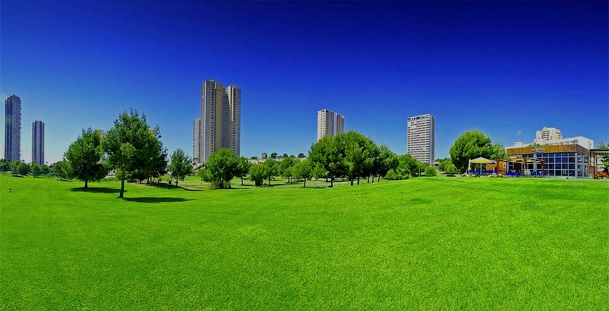
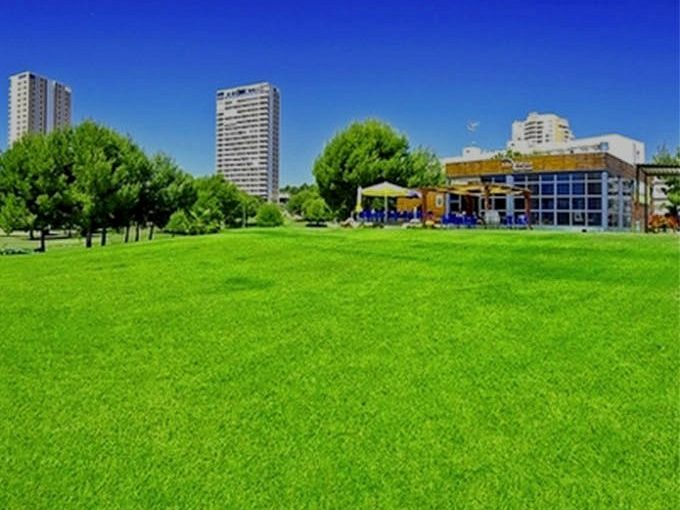
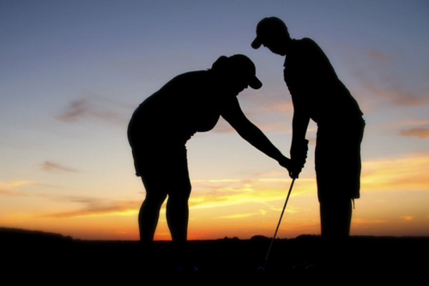
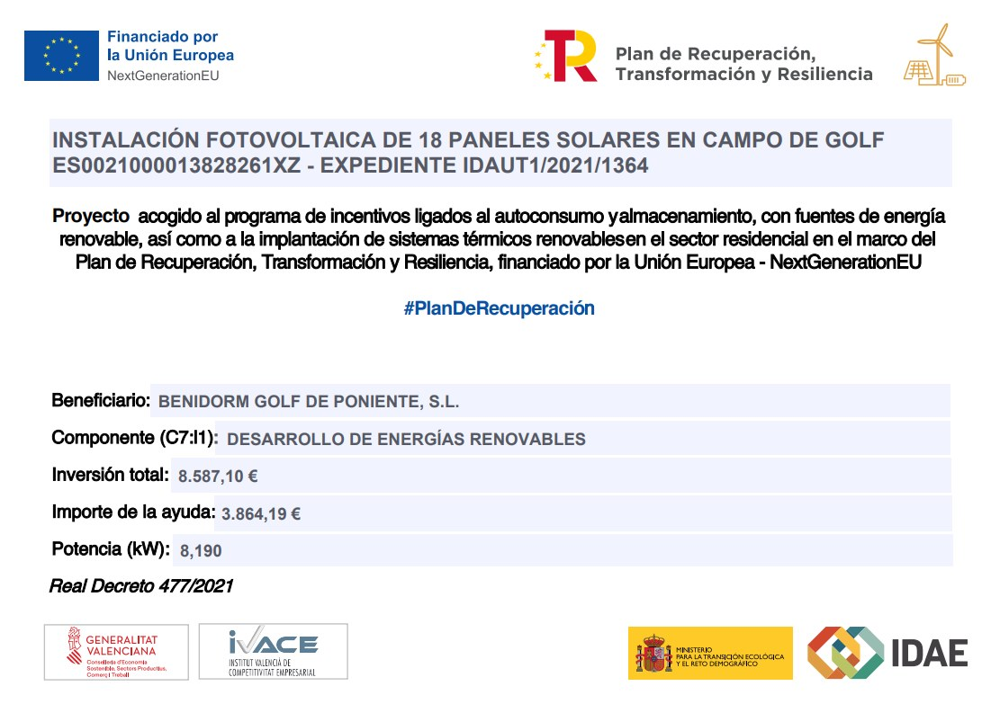

Cancha de prácticas
El área de prácticas está abierta a todos. Un cubo de 40 bolas cuesta 3 €.

Un campo entre pinos, en plena ciudad y a poco más de un kilómetro del mar. Para dar tus primeros golpes o afinar tu juego corto.
Las Rejas es un campo de 9 hoyos par 3 integrado en el casco urbano de Benidorm. El lugar ideal para empezar a jugar al golf, y para que los jugadores con experiencia perfeccionen su juego corto.
El recorrido está pensado para que cada vuelta sea entretenida: en todos los hoyos pones en práctica los golpes de aproximación. Los pares tres, de dificultad media y con una posición estudiada, gustan tanto a quien empieza como a quien ya tiene experiencia.

El área de prácticas está abierta a todos. Un cubo de 40 bolas cuesta 3 €.

Clases para toda la familia. Aprovecha el buen clima de Benidorm para aprender a jugar.

Juega los 9 hoyos sin ser socio. Te aconsejamos reservar con antelación por teléfono.

Nuestra terraza-bar está abierta a todos. Para tomar algo antes o después de tu vuelta.
Precios en euros. Para reservar tu salida, llámanos al +34 966 889 775.
Detrás de la avenida Vicente Pérez Devesa, a la altura del IES Mediterrània, a poco más de 1.000 metros de la playa.
Las Rejas Open ClubInstalación fotovoltaica en el campo de golf, financiada por la Unión Europea (NextGenerationEU) dentro del Plan de Recuperación, Transformación y Resiliencia.
